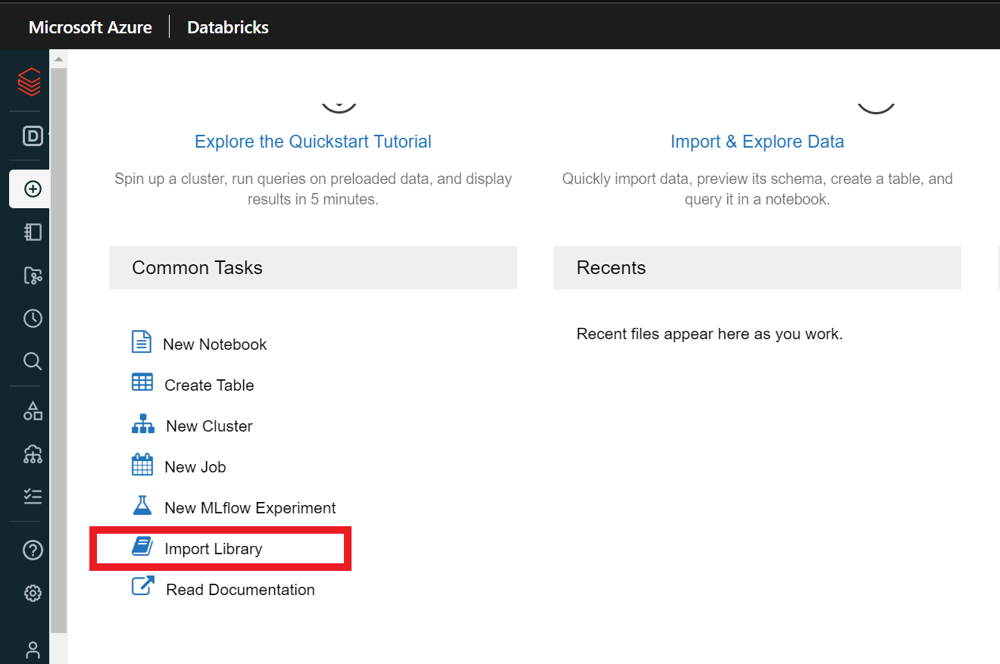
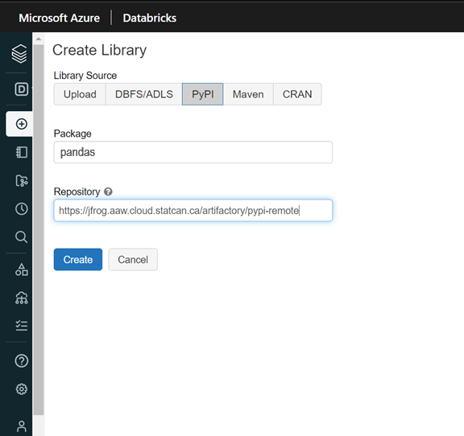
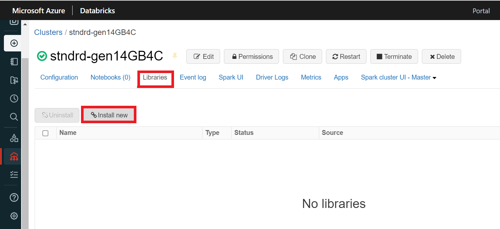
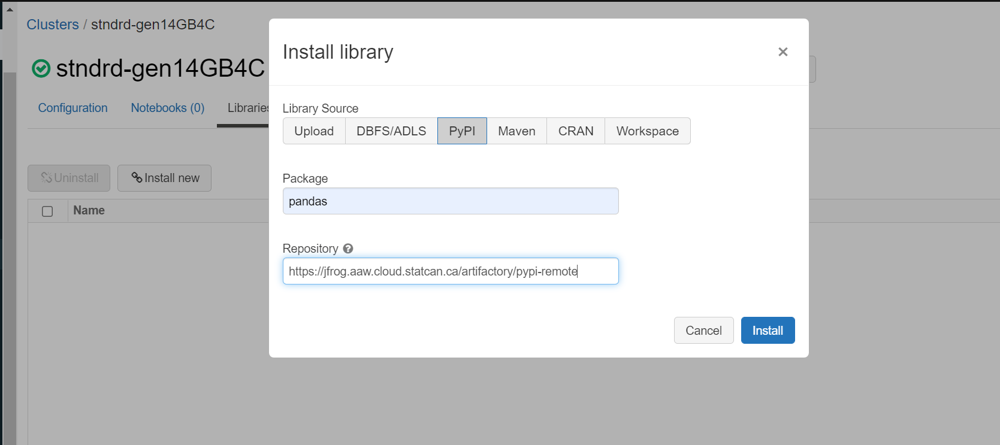
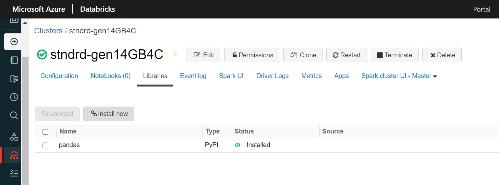
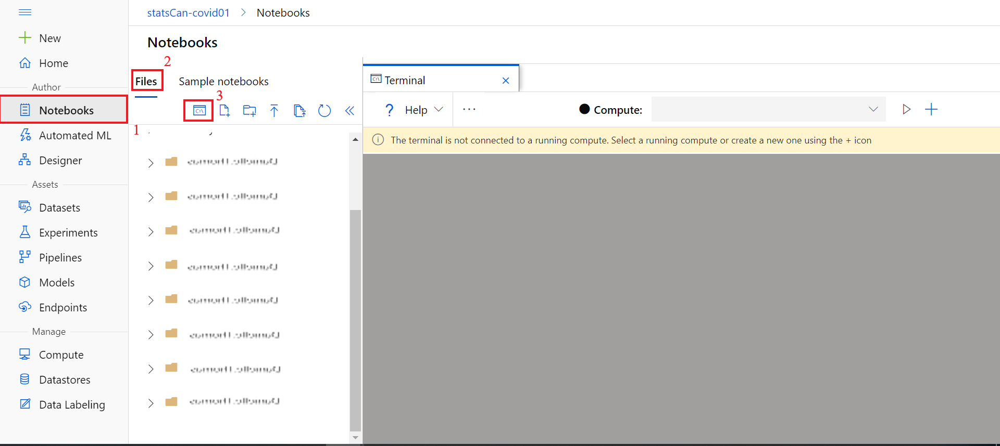
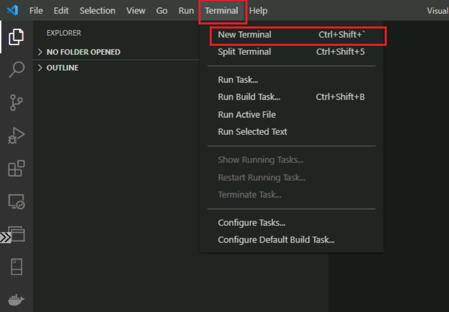

Package Managment
Artifactory
The CAE environment uses the Artifiactory for package & library management.
Included packages
Below are the URLs that Artifactory pulls from currently. As long as the package is available on these repositories, it can be downloaded. You can get the name of the package by searching through the repositories.
- Conda-forge
- CRAN (In the left menu, click Packages under Software, then click Table of available packages)
- Python
The respective artifactory URLs to use are: - https://jfrog.aaw.cloud.statcan.ca/artifactory/conda-forge-remote/ - https://jfrog.aaw.cloud.statcan.ca/artifactory/dev-cran-remote/ - https://jfrog.aaw.cloud.statcan.ca/artifactory/pypi-remote/
Note: For any other packages, please contact the Collaborative Analytics Environment team.
Azure DataBricks
The packages can be installed from the Databricks workspace or a cluster.
Note: - The library sources available in Databricks are PyPI for Python packages and CRAN for CRAN packages. - The artifactory URLs to use depending on the selected library source are: - https://jfrog.aaw.cloud.statcan.ca/artifactory/pypi-remote/ for PyPI - https://jfrog.aaw.cloud.statcan.ca/artifactory/dev-cran-remote/ for CRAN
From Databricks workspace
1.From the main page, click Import Library.

-
Under Library Source, choose either PyPI or CRAN depending of the package.
-
Paste the name of the library under Package and the associated Artifactory URL (See Note above) under Repository.

- Click Create.
Note: Select Install automatically on all cluster under Admin settings if you wish to install the package on all the available clusters of the workspace.
From a cluster
1.From the cluster main page, click Install new under Libraries.

-
Under Library Source, choose either PyPI or CRAN depending of the package.
-
Paste the name of the library under Package and the associated Artifactory URL (See Note above) under Repository.

- Click Install. You should see the newly installed library under Libraries.

Azure Machine Learning
The packages can be installed from the terminal using Python commands.
-
From the main page, click Notebooks, then click Open Terminal under Files. 
-
Select the compute instance assigned to you from the drop-down next to Compute.
If a compute instance has not been created for you, please contact the Collaborative Analytics Environment team.
- Run this code to setup pip to download packages from Artifactory repositories by default:
pip config --user set global.index-url https://jfrog.aaw.cloud.statcan.ca/artifactory/api/pypi/pypi-remote/simple

- You can now use pip3 or pip command to install packages as following:
pip3 install <PackageName>

Azure Synapse
Please contact the Collaborative Analytics Environment team to install custom packages in your Azure Synapse environment.
Visual Studio Code
1.From the Extensions tab, click Terminal, then click New Terminal. 
- Run this code to setup pip to download packages from Artifactory repositories by default:
pip config --user set global.index-url https://jfrog.aaw.cloud.statcan.ca/artifactory/api/pypi/pypi-remote/simple

- You can now use pip3* or pip** command to install packages as following:
pip3 install <PackageName>

RStudio
- Run this code to configure the Rprofile.site file to use the Artifactory repository by default:
options(repos = c(artifactory = "https://jfrog.aaw.cloud.statcan.ca/artifactory/dev-cran-remote/"),
download.file.method = "curl",
download.file.extra = "-k -L")

- Under Packages, click "Install". Choose the new repository that you added in step 1 and enter the package name to install.

Note: You can directly use the install.packages("PackageName") command to install packages
- You should see the installed package in the System Library list.

R Console
- Run this code to configure the Rprofile.site file to use the Artifactory repository by default:
options(repos = c(artifactory = "https://jfrog.aaw.cloud.statcan.ca/artifactory/dev-cran-remote/"),
download.file.method = "curl",
download.file.extra = "-k -L")
- Run the install.packages("PackageName") command to install packages.

Azure Cloud Virtual Machine
Miniforge Prompt
- Run this code to setup pip to download packages from Artifactory repositories by default:
pip config --user set global.index-url https://jfrog.aaw.cloud.statcan.ca/artifactory/api/pypi/pypi-remote/simple

- You can now use pip3 or pip command to install packages as following:
pip3 install <PackageName>

Command Prompt
- Run this code to setup pip to download packages from Artifactory repositories by default:
pip config --user set global.index-url https://jfrog.aaw.cloud.statcan.ca/artifactory/api/pypi/pypi-remote/simple

- You can now use pip3* or pip** command to install packages as following:
pip3 install <PackageName>

Python application
You can use the Command Prompt to install packages, then import them into the Python notebooks as the following scenario:
- Let's try to access the module’s contents with the import statement.

- Now let's install it using the Command Prompt. See Command Prompt section of this document if the pip.ini file hasn't been configured before
- The module can now be imported.

Download Packages locally
To download packages locally, you can use the Curl or pip download commands as following:
curl -O "https://jfrog.aaw.cloud.statcan.ca/artifactory/cae-generic-test/<PackageName>"
pip download <package_url>